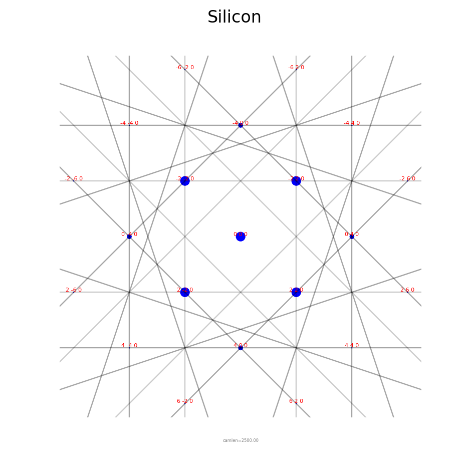
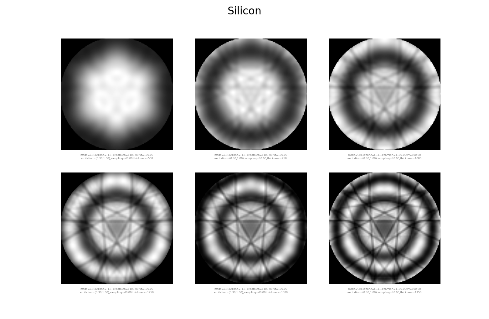
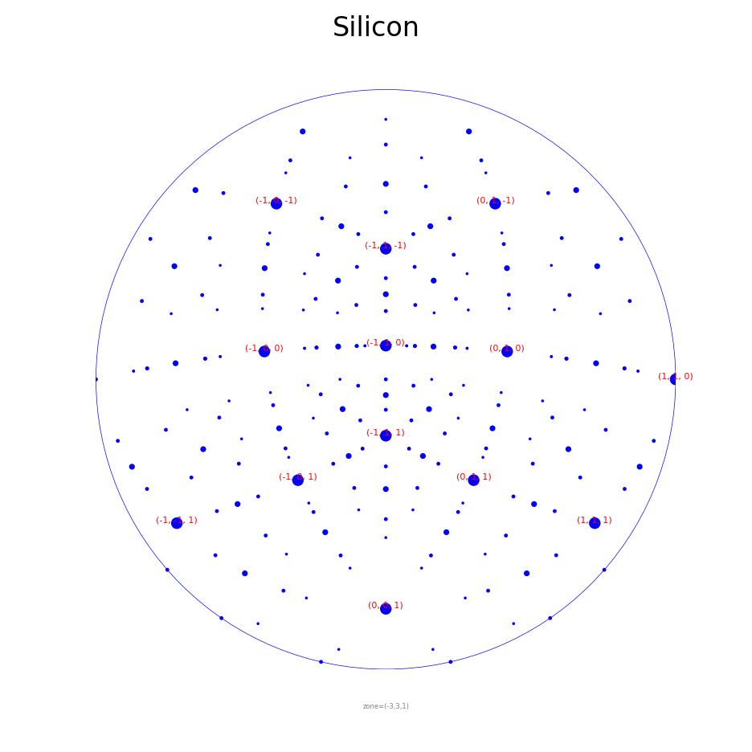
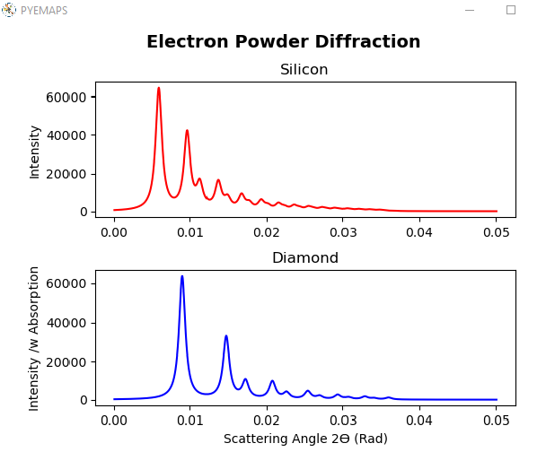
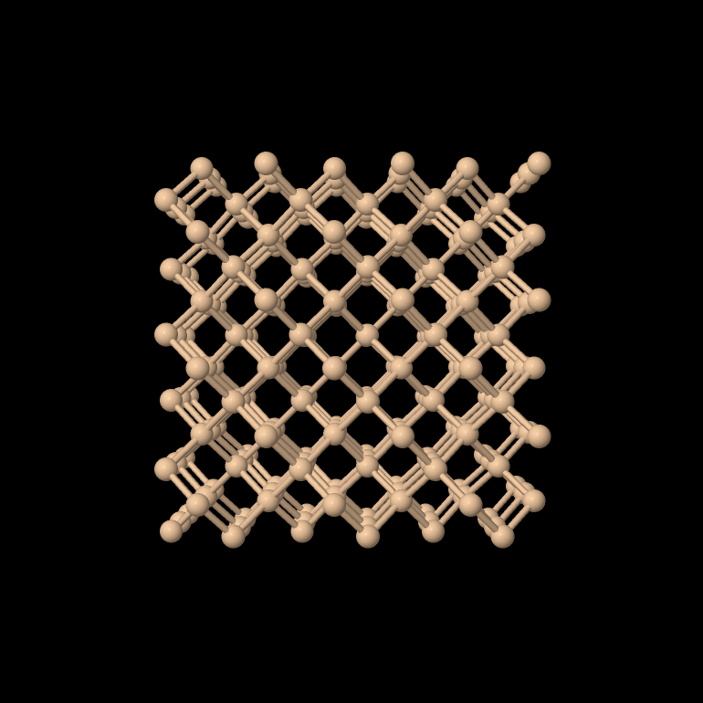
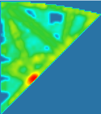

pyEMAPS
Electron diffraction simulation and crystallography in Python: kinematic and dynamical (Bloch wave) diffraction, stereodiagrams, powder patterns, structure factors, supercells and 4D-STEM pattern indexing.
pip install pyemaps
What you can simulate#

Spot patterns, Kikuchi and HOLZ lines, and CBED disks for any zone axis.

Bloch-wave CBED and large-angle CBED, with the scattering matrix and thickness series.

Indexed stereographic projections for any orientation.

Electron powder profiles, with and without absorption.

41 built-in crystals, CIF import, structure factors and supercells.

Index experimental patterns against a simulated database to find orientation and phase.
Your first diffraction pattern#
Load Silicon from the built-in library and simulate its kinematic diffraction pattern:
from pyemaps import Crystal, DPList, showDif
if __name__ == '__main__':
si = Crystal.from_builtin('Silicon')
emc, dp = si.generateDP()
dpl = DPList('Silicon')
dpl.add(emc, dp)
showDif(dpl)
Continue with Get Started.

Learn more#
Install, check the setup and run a first simulation.
Each feature explained, with examples.
Sample scripts with their output.
Every class and function.
pyEMAPS is developed by EMLab Solutions. The simulations follow the kinematic and dynamical theory in Spence and Zuo, Electron Microdiffraction (Plenum, 1992). Questions: support@emlabsoftware.com.